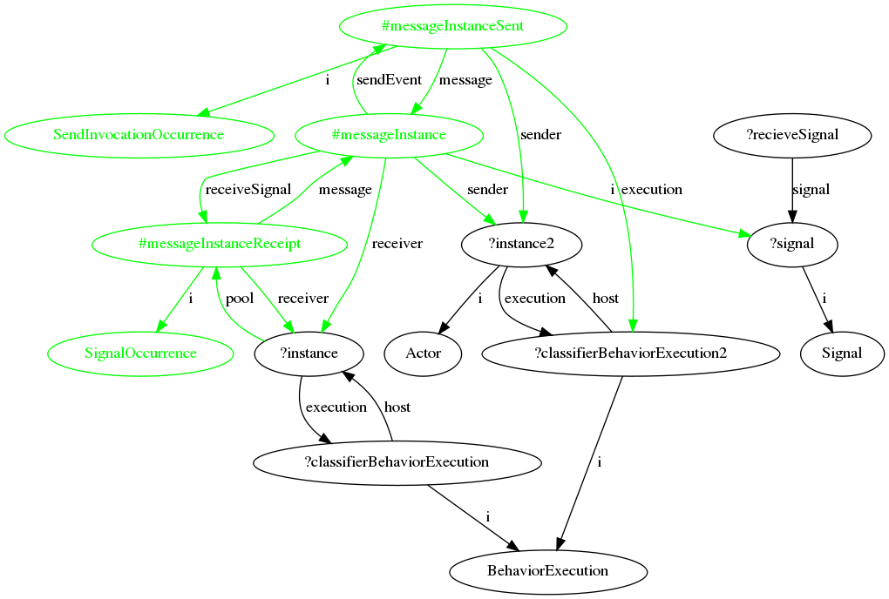

US Section 11.3.45 SendSignalAction
To see the rule description in the US pdf document, click here .
{kind=link}
Context
Below is the xml file which defines the order in which the rules are executed.
Rationale and Comments
'SendSignalAction is an action that creates a signal instance from its inputs, and transmits it to the target object, where it may cause the firing of a state machine transition or the execution of an activity.' The Action has two associations, a signal type that is to be sent, and a target (an input pin) that it is to be sent to.
In this variation, the sender of the signal is an external actor - 'instance2' in the rule diagram (generally the user in GRAF). The effect of the rule is to create a signal of the desired type (ie that which will trigger the transition between states) - '#c1', to 'send' the signal by creating a 'send event', and to accept a 'receipt' by creating a 'receipt event'. The send and receipt events create a bridge between the actor, the signal, and the recipient. The effect is that instance1 receives the signal that causes it to transition.